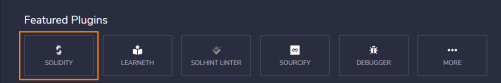
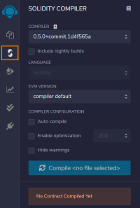
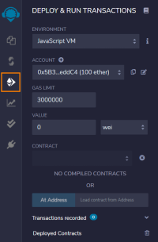

IDEs
IDEs
• Online Solidity IDE
◇ Remix →
http://remix.ethereum.org/Solidity IDECompilerThe compiler in the IDE must match with the one at the start of the file with:
Deploy Contract • Environment
◇
JavaScript VM → allow to deploy our contracts and run our transactions directly in the browser without any need for an external blockchain
◇
Injected Web3 → it is a plugin for the browser that can interact with the ethereum mainnet or any of the ethereum testnets
◇
Web3 Provider → useful if we are using a local blockchain
• Account: bunch of accounts prefilled with ether for our testing purpose, every time we reload the browser they are refilled